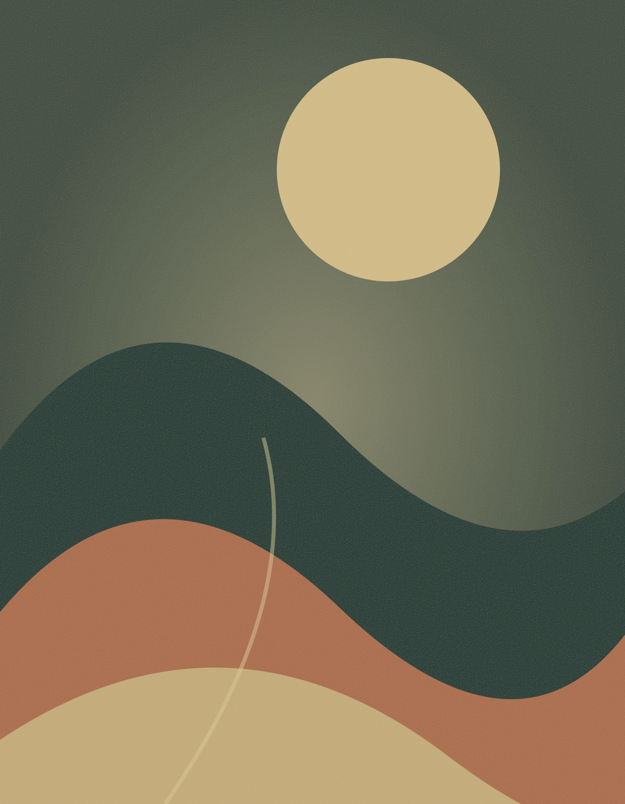

Una imatge. Un gest. Una cançó.
Cada toc tria una cançó a l’atzar. Mentre sona, els altres tocs no la interrompen. En acabar, silenci.
Els controls desapareixen en posar l’obra en marxa. Fes 4 tocs ràpids seguits per tornar aquí.
Pantalla activa: pendent d’activació.
Ús sense connexió: preparant…
Instal·la l’app des del menú del navegador (o «Compartir → Afegir a la pantalla d’inici» a l’iPad). Carrega els fitxers en aquesta app instal·lada i comprova-la en mode avió abans de l’exposició.
Per impedir sortir amb els gestos del sistema, activa Accés guiat a l’iPad o fixa l’app a Android. Els quatre tocs només obren aquests controls; el bloqueig del sistema es gestiona al dispositiu.
Els fitxers es desen només en aquest navegador i dispositiu. Conserva una còpia dels originals. La pantalla activa depèn del permís del sistema; comprova-la amb el dispositiu connectat al corrent.